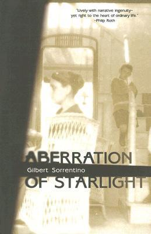

I recently visited Torres Del Paine park in Chile with my girlfriend and her father. Torres Del Paine is in the southern part of Patagonia and on the edge of the South Patagonian Ice Field. We walked an 80 mile circuit over 8 days and saw many glaciers in the park. The ice field is often covered in clouds, but we lucked out with some clear skies when we passed it.
I love eating at 'O Munaciello in Miami because they have a great gluten free pizza. The restaurant also has a great buratta and an excellent branzino. The food is reasonably priced and there usually are open tables at dinner time. The restaurant offers take out as well. Their website is here.
My favorite food is Brazilian Stroganoff. I like it with either steak or chicken and made with fresh mushrooms (some people prefer canned). I also like it with potato sticks on top and with a side of salad. I usually put extra salt and pepper on top of it as well.
| Name | Cover | Author | Summary |
|---|---|---|---|
| The Lost City of Z: A Tale of Deadly Obsession in the Amazon | |
David Grann | Col. Fawcett became obsessed with discovering the lost city of El Dorado while mapping South America and disappeared there during an expedition. Grann examines journal entries and historical records to examine the events leading up to Fawcett's disappearance. |
| The Hot Zone | Richard Preston | Preston details the events leading up to and after the first outbreaks of the Ebola and Marburg viruses. The book also investigates the potential origins of the two viruses. | |
| Aberration of Starlight |  | Gilbert Sorrentino | The book tells the story of a vacation from the perspective of 4 different members of a family. Different truths come to light as the story reveals them through the point of view of each character. |
| Under Pressure | |
Frank Herbert | A group of men aboard a submarine search for oil reserves to supply their country in a dystopian future. The story follows an Ensign tasked with finding a traitor in the ranks while on an oil recovery mission in the Atlantic. |